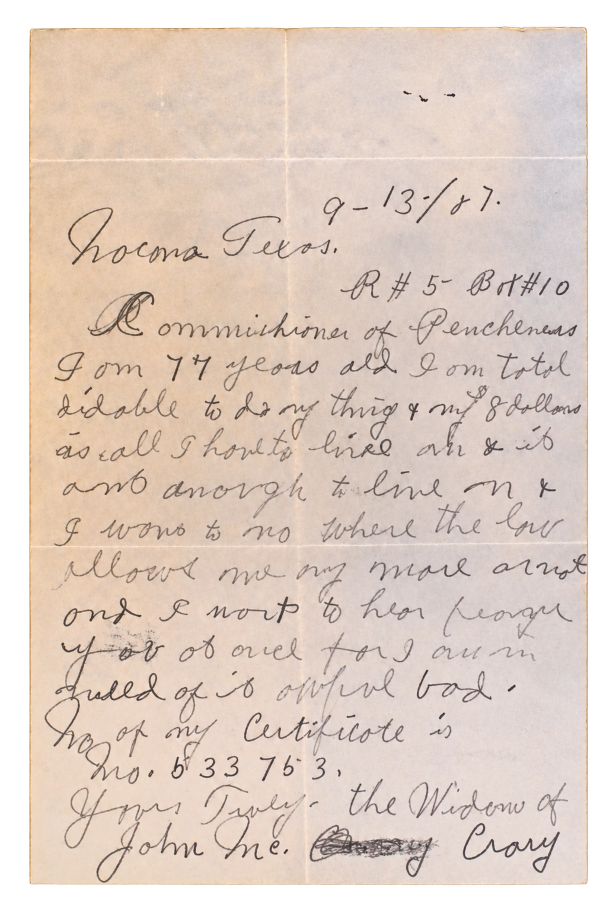

Paleography & Historical Documents
— ✦ —

Historical documents can be challenging to read and interpret, but they often contain invaluable information about the people, places, and events in your family’s past. Paleography and historical document services make difficult records readable, understandable, and useful for further research.
Services Include
- Document Transcription — A clear, readable typed transcription of handwritten historical documents.
- Diplomatic Transcription — A faithful reproduction preserving original spelling, capitalization, punctuation, abbreviations, line breaks, corrections, and other textual features.
- Document Abstracts — A concise extraction of key information, such as names, dates, relationships, places, and events.
- Document Interpretation — Clarification of unfamiliar terms and abbreviations, explanation of record conventions, and insight into the meaning and historical context of the document.
- Translation — Translation of historical documents into English, including German, Latin, and other languages considered upon request.
Documents May Include
- Wills and probate records
- Land and property records
- Court records
- Military records
- Church and parish registers
- Letters and correspondence
- Diaries and journals
- Certificates and vital records
- Business and legal documents
- Other handwritten historical documents